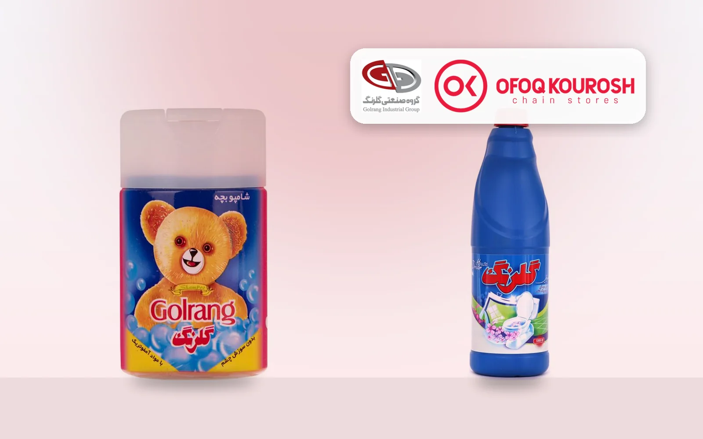
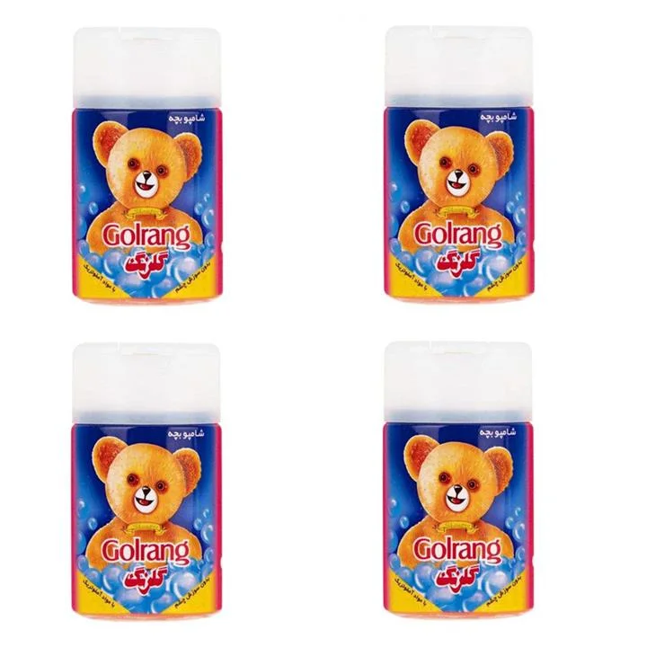
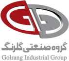

گلرنگGolrang
از یک کارخانهی شوینده در زنجان تا گروهی چندرشتهای؛ از غذا و دارو تا فروشگاه زنجیرهای و سینماFrom a detergent plant in Zanjan to a many-sided group, spanning food, medicine, chain stores and cinema
- زادگاهStarted in
- زنجانZanjan[1]
- شکلگیری گروهGroup formed
- ۱۳۸۲ (۲۰۰۳)2003[1]
- شرکت نخستFirst company
- پاکشوPakshoo[1]
در یک نگاهAt a glance
داستان گلرنگ با پاکشو شروع شد؛ شرکتی که سال ۱۳۵۱ در زنجان تأسیس شد و سال ۱۳۸۲ هستهی گروه صنعتی گلرنگ شد. این گروه امروز در حوزههای خیلی متنوعی حضور دارد و بعضی از برندها و فروشگاههایش را بیشتر مردم هر روز میبینند. ما این پرونده را با هم دنبال میکنیم: هر عدد کنار منبعش آمده و هرجا عددی تأیید نشد، همان را هم گفتهایم.Golrang's story begins with Pakshoo, founded in Zanjan in 1972, which became the core of Golrang Industrial Group in 2003. The group now works across a very wide range of fields, and many people see its brands and stores every day. We are following this record together with you: each figure sits next to its source, and where a figure could not be confirmed, we say so.[1][2]
مدیرانLeadership
مهدی فضلیMehdi Fazli
رئیس هیئتمدیره و مدیرعامل، طبق آخرین منبع در دسترسChairman and CEO, per the latest source available
سال ۱۳۷۰ به پاکشو پیوست و هنگام شکلگیری گروه در ۱۳۸۲ مدیرعامل شد. پس از ۱۳۹۹ ریاست هیئتمدیره را هم بر عهده گرفت.He joined Pakshoo in 1991 and became CEO when the group was formed in 2003. After 2020 he also became chairman.[1]
در چه حوزههایی هستWhere the group works[1][2]
- شوینده و بهداشتیDetergents and hygiene
- آرایشیCosmetics
- غذاFood
- داروPharmaceuticals
- سلولزیCellulose
- پخش و فروشDistribution and sales
- فروشگاه زنجیرهایChain stores
- سینما و سرگرمیCinema and entertainment
- ساختمانConstruction
- نفت و گازOil and gas
- پتروشیمیPetrochemicals
- معدنMining
- انرژیEnergy
- خودروAutomotive
- بیمهInsurance
- حملونقلTransport
- آموزشEducation
- فناوری اطلاعاتInformation technology
سرگرمیEntertainment
مجتمع کوروش سال ۱۳۹۳ باز شد و پردیس سینمایی ۱۴ سالنه با بیش از ۳٬۰۰۰ صندلی دارد. زومیت هم از قول مدیرعامل فیلمنت از سرمایهگذاری بیش از هزار میلیارد تومانی گلرنگ در این پلتفرم نوشته است.Kourosh Mall opened in 2014, with a 14-screen cinema complex and more than 3,000 seats. Zoomit also reported Filmnet's chief executive citing an investment of over 1,000 billion tomans by Golrang in the platform.[1][2][4]
به زبان عددIn numbers
- بیش از ۱ میلیارد واحد1 billion+ units
- بیش از ۲٬۶۰۰ فروشگاه2,600+ stores
- بیش از ۵۰٬۰۰۰ نفر50,000+ people
- نزدیک ۱۰۰ شرکتNearly 100 companies
- حدود ۲ میلیارد دلارAbout $2 billionفروش سالانه به گفتهی مدیرعامل؛ سال ۱۳۶۸ حدود ۱ میلیون دلار بودin annual sales, per the CEO, up from about $1 million in 1989گفتهی خود شرکتCompany statement حدود ۱۳۹۶؛ قدیمی استAbout 2017; now dated[2]
- حدود ۱ میلیون نفرAbout 1 million peopleبازدید ماهانه از مجتمع کوروشvisiting Kourosh Mall each monthگفتهی خود شرکتCompany statement حدود ۱۳۹۶About 2017[2]
مسیرThe path so far[1]
- ۱۳۵۱1972تأسیس پاکشو در زنجانPakshoo is founded in Zanjan
- ۱۳۷۰1991مهدی فضلی به پاکشو میپیونددMehdi Fazli joins Pakshoo
- ۱۳۸۲2003گروه صنعتی گلرنگ رسماً شکل میگیردGolrang Industrial Group is formally established
- ۱۳۸۶2007نخستین کارخانهی غذایی گروه راه میافتدThe group's first food plant opens
- ۱۳۸۷2008تأسیس دانشگاه گلرنگGolrang University is founded
- ۱۳۹۰2011تأسیس هلدینگ دارویی گروهThe group's pharmaceutical holding is founded
- ۱۳۹۳2014افتتاح مجتمع کوروش با پردیس سینمایی بزرگKourosh Mall opens with a large cinema complex
- ۱۳۹۹2020درگذشت بنیانگذار و آغاز ریاست هیئتمدیرهی مهدی فضلیThe founder dies and Mehdi Fazli becomes chairman
هنوز تأیید نشدهNot yet confirmed
- رقم صادرات گروه و کشورهای مقصد؛ منبعی با عدد مشخص پیدا نکردیم
- فروش تازهی گروه؛ آخرین عدد در دسترس حدود سال ۱۳۹۶ است
- مدیرعامل فعلی؛ شاید منابع در دسترس بهروز نباشند
- سال شروع؛ ویکیپدیا در یک جا ۱۳۳۹ (۱۹۶۰) و در جای دیگر ۱۳۵۱ (۱۹۷۲) آورده است و خود مدیرعامل ۱۳۵۱ را گفته است
- Group exports and destination countries; we found no source with a specific figure
- Current group sales; the latest figure available dates from about 2017
- The current CEO; available sources may not be up to date
- The start year; Wikipedia gives both 1960 and 1972, and the CEO himself said 1972
منابعSources
- [1]Wikipedia: Golrang Industrial Group (the article carries quality warnings)
- [2]The Business Year: interview with Mehdi Fazli (undated, about 2017)
- [3]DBpedia: Golrang Industrial Group
- [4]Zoomit: Filmnet's chief executive on Golrang's investment
این پرونده بر پایهی منابع عمومی نوشته شده و شرکت پیش از انتشار آن را بازبینی نکرده است.This record is based on public sources and was not reviewed by the company before publication.
آخرین بررسی:Last checked: ۱۴ آبان ۱۴۰۵5 November 2026